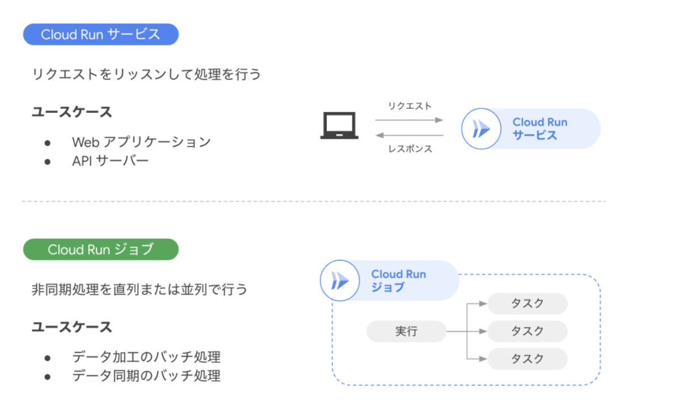

サーバーレスアーキテクチャ¶
サーバーレスアーキテクチャを利用することで、インフラの管理を最小限に抑え、開発者がAPP開発に集中することができる。
GCPでは、AppEngine・Cloud Functions・Cloud Run・Cloud Run Functionsといったサーバーレスサービスが提供されている。
App Engine¶
App Engine は、Webアプリケーションのインフラ運用を極限まで簡略化し、スケーラブルかつ安全なサービスを素早く構築・運用できる GCP のサーバーレスプラットフォーム。
スタンダート環境とフレキシブル環境の2種類が提供されている。
環境 |
特徴 |
利用可能な言語 |
スケーリング |
カスタマイズ性 |
|---|---|---|---|---|
スタンダード環境 |
軽量・高速起動、料金が細かく課金される（秒単位） |
Python, Java, Node.js, Go などの一部バージョン |
リクエスト数に応じて自動スケーリング |
制限あり（固定ランタイム） |
フレキシブル環境 |
Dockerベースのカスタム環境、メモリやCPUの指定も可能 |
ほぼすべての言語に対応（カスタムランタイム） |
VM単位でスケーリング（起動はやや遅い） |
高い（VMレベルで自由に設定可能） |
Cloud Functions¶
CloudFunctionsは、イベント駆動型の関数実行環境である。
開発者は、インフラ管理は一切不要であり、コードをデプロイするだけで、処理を実行することができ、AWSのLambdaのようなサービスである。

Learn Cloud Functions in a snap!
第一世代と第二世代があり、第二世代の利用が推奨されており、タイムアウトやトリガー可能なサービスが増えている。
項目 |
第1世代（First Gen） |
第2世代（Second Gen） |
|---|---|---|
サポート言語 |
限定（特定バージョンのPython, Java, Go など） |
より多くの言語・バージョンに対応 |
トリガー |
HTTPリクエストのみ |
HTTP、Task Queues、Pub/Sub、Scheduler など |
最大タイムアウト |
約1分（60秒） |
最大60分まで拡張可能（バックグラウンドタスク） |
ライブラリの制約 |
固定ランタイム、使えるライブラリに制限あり |
柔軟なライブラリ・依存管理が可能（ローカルパッケージ使用OK） |
Cloud Run¶
Cloud Runとは、フルマネージドなコンテナ実行環境である。
任意の言語やライブラリを含むアプリケーションを、コンテナ化してデプロイすると、自動で実行環境が構築される。Cloud RunはAWS Lambdaの気軽さとFargateのカスタマイズ性を併せ持ちつイメージ。また特徴は以下のようなものがある。
オートスケーリング＆ゼロスケール
リクエストの有無に応じてインスタンス数が自動調整され、使わないときにはスケールダウンして課金が停止 。Dockerイメージ管理：Artifact Registry連携
リポジトリにDockerイメージを格納し、Cloud Runで実行。CLIやソースデプロイも可能。
CloudRunには、Cloud Run ServicesとCloud Run Jobsの2つの機能が存在。

Cloud Run ジョブ ことはじめ
特徴をまとめると下表になるが詳細は、次節で解説。
種類 |
特徴 |
主な利用ケース |
|---|---|---|
Cloud Run Services |
HTTP/Gatewayを通じたリクエストに応答する |
Web API、マイクロサービス、イベント駆動（Pub/Sub/Eventarc） |
Cloud Run Jobs |
一時的タスクを実行し終えると停止する |
データ処理バッチ、画像リサイズ、DBマイグレーション、定期ジョブ |
Cloud Run Services¶
Cloud Run Servicesは、HTTPエンドポイントに対するリクエストなど、外部からのリクエストをトリガーとして実行される特徴がある。
Cloud Run Jobs¶
Cloud Run Jobsは、HTTPサーバーを立てず、一度実行して終了するバッチ的な処理に設計されたリソース。手動やスケジュールワークフローの一部など、任意のタイミングで実行される特徴がある。
Cloud Run Jobsは下図のようにJob、Execution、Taskから構成される。
 Cloud Run jobsを徹底解説！
Cloud Run jobsを徹底解説！
これら3つの特徴をまとめると以下。
要素 |
説明 |
主な構成・制御対象 |
成功・失敗の定義 |
|---|---|---|---|
Job |
コンテナイメージやTask数、並列度、CPU/メモリ、環境変数などを定義・保持するルートリソース |
• 使用するコンテナイメージ |
— |
Execution |
Job の実行単位。1回の gcloud run jobs execute や Workflows等の起動により生成される |
• 登録された Job 設定に基づいて Task を生成・実行 |
全 Task が成功 →成功 |
Task |
Execution によって起動された個別のコンテナインスタンス（1 Task = 1 コンテナ） |
• 環境変数 CLOUD_RUN_TASK_INDEX, CLOUD_RUN_TASK_COUNT による役割決定 |
コンテナが正常に終了、もしくはタイムアウトや再試行制限到達でタスク完了。未終了であれば失敗とみなされる |
Cloud Run Functions¶
2024年8月に、CloudRunとCloud Functionsが統合され、Cloud Run Functionsのサービスが開始された。
Cloud Functions is now Cloud Run functions — event-driven programming in one unified serverless platform
Cloud Run Functionsは、Cloud Functionsの開発の簡易性とCloud Runの実行環境の柔軟性を兼ね備えたサービス。
ユーザーはソースコードをデプロイするだけで、Google Cloudが自動的にコンテナイメージをビルドし、Cloud Run上で実行されます。
サービスの比較表は以下
特徴 |
Cloud Functions（第1世代） |
Cloud Run Functions |
Cloud Run |
|---|---|---|---|
デプロイ方法 |
ソースコード |
ソースコード |
コンテナイメージ |
対応言語 |
特定の言語に限定 |
複数の言語に対応 |
任意の言語に対応 |
実行時間制限 |
最大9分 |
最大60分 |
最大60分 |
スケーリング |
自動スケーリング |
自動スケーリング |
自動スケーリング |
イベントトリガー |
HTTP、Pub/Sub、Cloud Storage |
HTTP、Pub/Sub、Eventarcなど |
HTTP、Pub/Subなど |
VPC接続 |
制限あり |
可能 |
可能 |
トラフィック分割 |
不可 |
可能 |
可能 |
最小インスタンス設定 |
不可 |
可能 |
可能 |